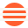
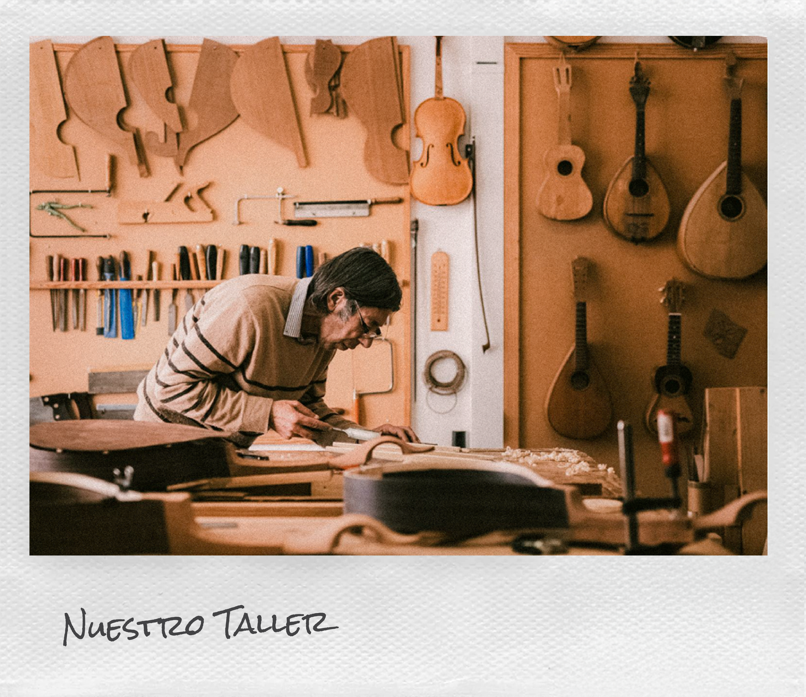
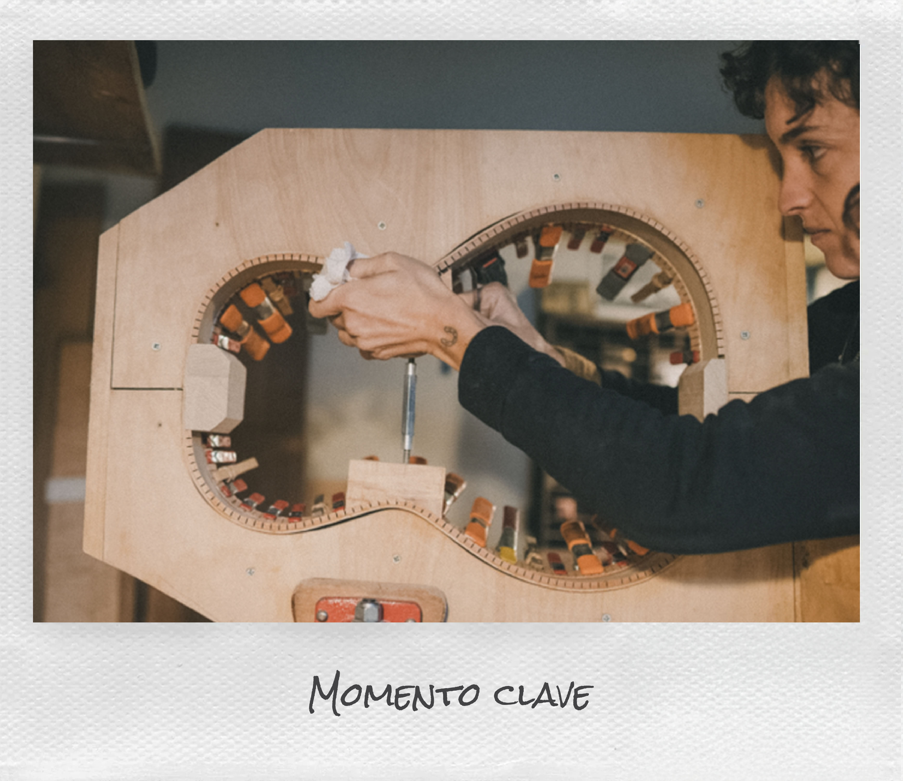
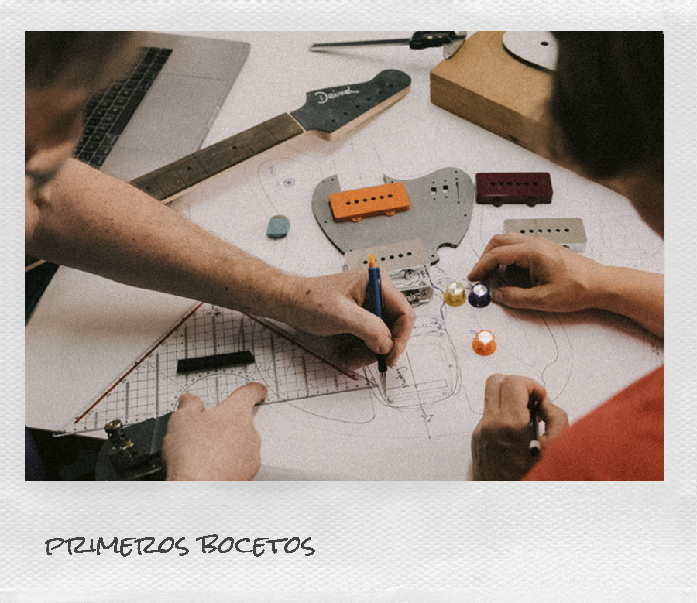
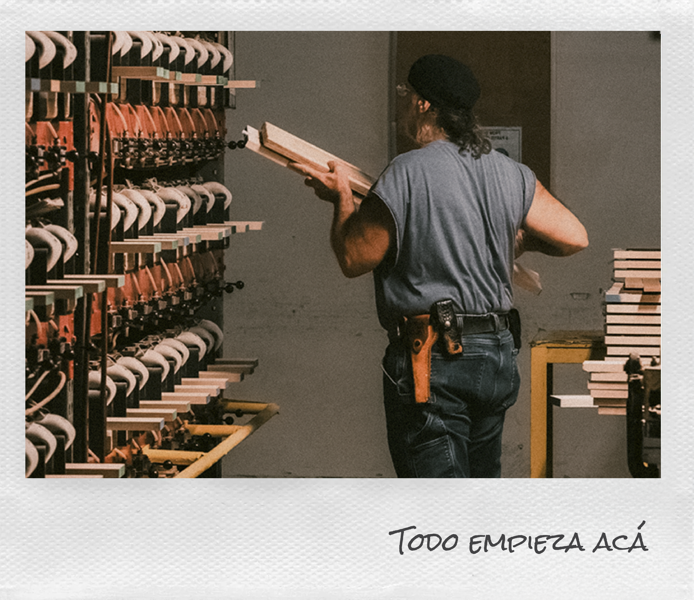

Calibración de violín
Ajustá y poné a punto un violín, trabajando el puente, las clavijas y los accesorios para optimizar su sonido.
$300.000
6 cuotas sin interés
+ BIBLIOTECA UI
Los colores, tipografías y elementos que definen cómo se ve y se siente la marca en cada rincón del sitio.
+ 01 — MARCA
El logo de Trastes es un isologo tipográfico. Usá la versión clara sobre fondos oscuros y la oscura sobre fondos claros — nunca lo combines con colores fuera de la paleta.
VARIANTES
USO INCORRECTO
FAVICON

+ 02 — COLOR
La paleta de Trastes nace del taller: madera, cuero y el naranja que marca cada llamado a la acción. El crema es la superficie principal; el naranja, el acento que guía la mirada.
PRIMARIOS
SECUNDARIOS
+ 03 — TIPOGRAFÍA
Tres tipografías, cada una con un rol fijo. Syne para lo que tiene que pesar, DM Sans para lo que se lee, Chivo Mono para lo que se etiqueta.
01
Syne
TÍTULOS · DISPLAY
Reservada para títulos de hero, encabezados de sección y números destacados. Le da peso editorial a la marca — se usa poco y con intención.
El origen de tu sonido
02
DM Sans
TEXTO · UI
Descripciones, títulos secundarios y todo el copy de lectura. Medium para lo que necesita jerarquía, Regular para el resto.
Construimos instrumentos artesanales y compartimos el oficio que los hace posibles.
03
Chivo Mono
LABELS · DATOS
Labels, botones, badges y datos técnicos. Siempre en mayúscula.
+ Nuestro manifiesto
04
Rock Salt Pro
MANUSCRITA · DETALLES
Tipografía manuscrita utilizada en pequeños detalles para transmitir el carácter artesanal y la calidez del oficio.

HEROSyne · 700 · clamp(42–100px)
El origen de tu sonido
TÍTULO DE SECCIÓNSyne · 700 · 42px
Cada etapa construye el resultado
CUERPODM Sans · 400 · 18px
Trabajá con herramientas profesionales y materiales reales.
LABELChivo Mono · 400 · 16–20px
+ Quiénes somos
+ 04 — BOTONES
Dos jerarquías. El primario lleva a la acción principal de cada pantalla; el secundario acompaña, nunca compite. Pasá el mouse para ver el estado hover.
PRIMARIO
SECUNDARIO
TRANSPARENTE — SOBRE FOTO
+ 05 — CARDS
Tres familias de card: de curso (con precio y CTA), de texto (sin imagen) y con foto (donde la imagen es protagonista).
CARDS DE CURSO
Ajustá y poné a punto un violín, trabajando el puente, las clavijas y los accesorios para optimizar su sonido.
$300.000
6 cuotas sin interés
Diseñá y construí una guitarra hecha con tus propias manos, recorriendo cada etapa del proceso artesanal.
$560.000
6 cuotas sin interés
.course-card — stroke gris, uso general · .course-card--featured — borde naranja, para destacar una opción
CARDS DE TEXTO
El curso superó mis expectativas. No solo aprendí técnicas de luthería, sino que terminé con una guitarra criolla que refleja el sonido y la estética que buscaba"
MATERIALES
Trabajá con maderas y componentes de alta calidad seleccionados para tu proyecto.
.testimonial-card — home, carrusel de testimonios · .includes-item — detalle, sección "Qué incluye"
CARDS CON FOTO

+ DIRECTOR Y MAESTRO LUTHIER
Luthier con amplia trayectoria en guitarras de autor. Coordina el programa académico y guía a los alumnos en los procesos estructurales más complejos del oficio.
 Guitarra acústica
Construida con maderas seleccionadas para lograr un sonido cálido, equilibrado y natural.
VER MÁS
Guitarra acústica
Construida con maderas seleccionadas para lograr un sonido cálido, equilibrado y natural.
VER MÁS
.team-card — detalle, sección "Profesores" · .explore-card — home, galería de instrumentos
+ 06 — FOTOS
Conjunto de recursos fotográficos utilizados a lo largo del sitio, incluyendo imágenes con estilo Polaroid, composiciones apiladas con animación y fotografías sin borde para adaptarse a distintos contextos y reforzar la identidad visual del proyecto.
POLAROID — CON BORDE




SIN BORDE

+ 07 — COMPONENTES EXTRA
Componentes complementarios utilizados para enriquecer la experiencia de navegación y reforzar la identidad visual del proyecto. Incluye elementos funcionales y decorativos reutilizables en distintas secciones de la interfaz.
FLECHAS DE CARRUSEL
LÍNEA DE TIEMPO
ACORDEÓN